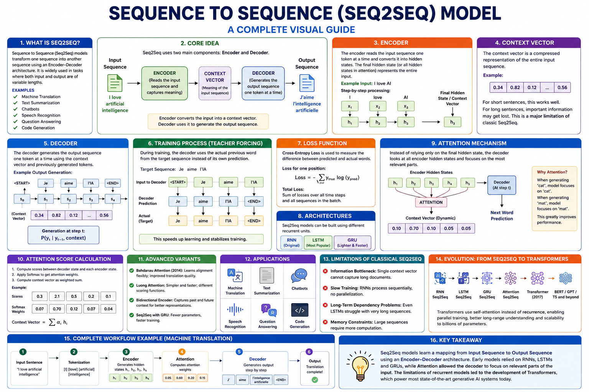

Master the encoder-decoder architecture with attention — the backbone of machine translation, summarization, and modern LLMs.
Sequence-to-Sequence (Seq2Seq) models transform one sequence into another using an encoder-decoder framework. This guide covers the 10 most critical hyperparameters — from attention heads and model depth to warmup steps and label smoothing — with architecture breakdowns, runnable Transformer code, comparison tables, and a comprehensive self-assessment quiz for the CGAI exam.

hi = BiLSTM(xi)αt,i = softmax(score)st = LSTM(yt-1, ct)📊 Seq2Seq with Attention overview — encoder, attention mechanism, and autoregressive decoder
Number of parallel attention mechanisms. Each head attends to different representation subspaces, enabling the model to capture diverse token relationships.
Number of stacked encoder and decoder layers. More layers increase representational capacity but also training time and overfitting risk.
Dimensionality of token embeddings and all sub-layer outputs. Larger d_model captures richer representations at the cost of memory and compute.
Applied to attention weights, residual connections, and feed-forward outputs. Crucial for preventing overfitting in Seq2Seq models.
The most critical hyperparameter. Transformers use a specialized schedule: linear warmup followed by inverse-square-root decay.
Number of source-target sequence pairs per update. Transformers benefit from large batches but require gradient accumulation on memory-limited hardware.
Number of initial training steps where the learning rate linearly increases from 0 to the peak value. Essential for Transformer stability.
Adam is the standard optimizer for Transformers, with specific β values (β₁=0.9, β₂=0.98, ε=10⁻⁹) recommended in the original paper.
Limits input and output sequence length. Longer sequences allow more context but quadratic attention cost (O(n²)) makes this expensive.
Cross-entropy loss with optional label smoothing. Smoothing prevents the model from becoming overconfident, improving generalization and BLEU scores.
The Seq2Seq model consists of an encoder that processes the source sequence, an attention mechanism that computes context vectors, and a decoder that autoregressively generates the target sequence. Modern implementations use the Transformer architecture with multi-head self-attention and cross-attention.
Understanding each component of the attention mechanism and encoder-decoder architecture is essential for tuning Seq2Seq models effectively.
Self-attention: Q, K, V all from the same sequence (encoder or decoder). Cross-attention: Q from decoder, K, V from encoder — this is where source-target alignment happens.
Every sub-layer (attention and FFN) uses residual connections followed by layer normalization: Output = LayerNorm(x + Sublayer(x)).
These settings govern how the Seq2Seq model learns alignments and generates fluent target sequences.
The Transformer uses a warmup-then-decay schedule. Without warmup, training often diverges in early steps due to large gradient variance.
Group sequences by approximate length to minimize padding waste. Dynamic batching maximizes GPU utilization.
Simulates larger batches by accumulating gradients over multiple mini-batches before each optimizer step. Essential for GPU-limited setups.
Softens one-hot targets to prevent overconfidence. The model assigns ε probability mass to incorrect classes, improving generalization.
Use these techniques to prevent overfitting and improve Seq2Seq generalization.
Dropout is applied to attention weights, residual connections, and FFN outputs. It is the primary regularizer for Transformers.
Reduces model overconfidence by softening targets. Crucial for translation tasks — improves BLEU by preventing peaky distributions.
Adds an L2 penalty to prevent weights from growing too large. AdamW decouples weight decay from adaptive learning rates.
Normalizes activations across the feature dimension. Essential for stable Transformer training — used after every sub-layer.
A complete PyTorch Transformer implementation. All ⑩ hyperparameters are annotated with numbered labels.
⬆️ Complete PyTorch Transformer implementation. All ⑩ hyperparameters are circled and labeled. Copy into a .py file to run.
| # | Hyperparameter | Purpose | Typical Range / Values |
|---|---|---|---|
| ① | Attention Heads | Parallel representation subspaces for attention | 8 (base), 12–16 (large) |
| ② | Model Depth | Number of encoder/decoder layers | 6/6 (base), 12/12 (big) |
| ③ | Embedding Size (d_model) | Token and hidden state dimensionality | 256, 512, 768, 1024, 4096 |
| ④ | Dropout | Prevents overfitting on attention and FFN | 0.1 (standard), 0.2–0.3 (small data) |
| ⑤ | Learning Rate | Peak LR in warmup-decay schedule | ~0.0007 (base Transformer) |
| ⑥ | Batch Size | Sequence pairs per update | 64–128 (or ~25k tokens) |
| ⑦ | Warmup Steps | Initial LR ramp-up for stability | 4000 (from scratch), 0–500 (fine-tuning) |
| ⑧ | Optimizer | Weight update strategy with specific betas | Adam (β₁=0.9, β₂=0.98), AdamW |
| ⑨ | Max Sequence Length | Context window size | 512 (translation), 2048+ (LLMs) |
| ⑩ | Label Smoothing | Softens targets to prevent overconfidence | 0.1 (standard), 0.0 (no smoothing) |
Discovered automatically during training
Set manually before training begins
Use these defaults as your first experiment baseline:
🔬 Tune from here: first adjust learning rate & warmup, then model depth, then attention heads and dropout.
| Feature | RNN/LSTM Seq2Seq | Transformer Seq2Seq |
|---|---|---|
| Sequence Processing | Sequential (O(n) path length) | Parallel (O(1) path length) |
| Long-range Dependencies | Struggles (vanishing gradients) | Excellent (direct attention) |
| Training Speed | 🐢 Slower (sequential) | ⚡ Faster (parallelizable) |
| Memory (Attention) | O(n·d) | O(n²·d) |
| Position Information | Implicit (recurrence) | Explicit (positional encoding) |
| Best For | Short sequences, low resources | Long sequences, parallel hardware |
Test your knowledge with 25 questions covering Seq2Seq architectures, attention mechanisms, hyperparameters, and training strategies.